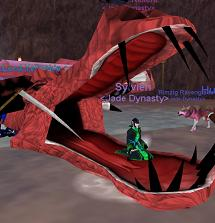

 cs.tamu.edu, ###.###.####
cs.tamu.edu, ###.###.####
I grew up in a small town about an hour drive north of New Orleans Louisiana called Tickfaw. As you might imagine other than the weekend trip to New Orleans there was not much to do. I developed a strong passion for computer gaming, which in those bad old days meant learning a lot about how to mess with DOS to actually get things to work. I started learning about how our computer system worked and the more I learned the more I wanted to know. I also enjoyed drawing and model building.
The aspect of computing that interested me the most was that the computer gave us the ability to define our own universes. Each of these universes is bounded only by the limitations of the computer itself and our own imaginations. In many respect the same applies to art, and construction.
In essence I became obsessed with building and exploring artificial worlds. But it wasn’t just the imaginary that interested me. I felt it was necessary to understand the “real” as well.
During High School I had the opportunity to work with some great teachers, and I eventually learned Pascal, c, c++, and Java. (lets forget I mentioned Pascal) I also began doing 3d graphics with the Allegro graphics Library.
I started my undergraduate work in 1998 at Texas A&M. Shortly there after I managed to get lucky and land an Internship with IBM Java development. Eventually this lead me down the road of internet technologies. Since then I have worked on projects ranging from UDDI (at IBM) all the way to digital character animation
I eventually developed a strong interest in good software design and I always strive to apply deign concepts and structures to applications I work on. I hate to see people redoing work that has been done before, or even worse doing something poorly when there is a better way.
The work in the Interface Ecology lab is right up my ally. We create our own universes for the purposes of exploring and understanding our own worlds as well as the infinity of other worlds that humanity creates. We hope to share these universes with others in way that is meaningful and empowering.
Aside from computing… I enjoy playing traditional table top RPG’s, Rifts and D&D being my favorite two. I also like martial arts, fencing and archery. (though I don’t get to do them very often) I draw a lot, and on occasion have been known to paint.
=======In essence I became obsessed with building and exploring artificial worlds. But it wasn’t just the imaginary that interested me. I felt it was necessary to understand the “real” as well.
During High School I had the opportunity to work with some great teachers, and I eventually learned Pascal, c, c++, and Java. (lets forget I mentioned Pascal) I also began doing 3d graphics with the Allegro graphics Library.
I started my undergraduate work in 1998 at Texas A&M. Shortly there after I managed to get lucky and land an Internship with IBM Java development. Eventually this lead me down the road of internet technologies. Since then I have worked on projects ranging from UDDI (at IBM) all the way to digital character animation
I eventually developed a strong interest in good software design and I always strive to apply deign concepts and structures to applications I work on. I hate to see people redoing work that has been done before, or even worse doing something poorly when there is a better way.
The work in the Interface Ecology lab is right up my alley. We create our own universes for the purposes of exploring and understanding our own worlds as well as the infinity of other worlds that humanity creates. We hope to share these universes with others in way that is meaningful and empowering.
Aside from computing… I enjoy playing traditional table top RPG’s, Rifts and D&D being my favorite two. I also like martial arts, fencing and archery. (though I don’t get to do them very often) I draw a lot, and on occasion have been known to paint.